- ICO正式开始时间为北京时间2017年6月9日 18：00
- 敬请期待！
登录
K币
- 柬埔寨国家级代币
- K币是基于ACChain底层架构发行锚定柬埔寨名优特农品的柬埔寨国家级代币，由柬埔寨自主研发，既符合柬埔寨国情，又具有国际化发展趋势的数字货币。K币通过与ACC互换实现流通；ACC与中国数字本币普银（NPC）互换，实现K币与中国市场的资产交易流通。
- K币与ACC
与国际总账代币ACC互换
建立全新行业规则 规范产业良性发展
在柬埔寨乃至东南亚作为交易本币实现资产互换流通
加速资产流通 促进经济发展
- K币与数字化农业交易所
柬埔寨王国数字化农业交易所（以下简称“交易所”）是由柬埔寨王国政府和柬埔寨国家银行认可发行数字货币的交易所。
- 让柬埔寨农业产品交易不再困难、让柬埔寨农业资产数字货币K币持续增值！交易所按照“高标准、稳起步”的原则，积极推动农业产品新品种的上市，努力完善权益、
利率、线上交易三条产品线，满足参与者多样化风险管理需求。采取全数字货币化（K币）交易方式，以高效安全的技术系统为强大后盾，在借鉴国内外先进技术成果和
设计理念的基础上，建立了一个结构合理、功能完善、运行稳定的数字化农业交易平台。

- K币发行意义
- 随着互联网的发展，网络世界正在突破国家地域边界，成为新的规则和治理竞争的焦点。电子货币，数字货币的骤然兴起，并将成为主要国家竞争的焦点。柬埔寨王国也顺
应世界地缘经济的形式，柬埔寨中央银行，柬埔寨国家银行联合数字化交易所发行了在基于区块链技术的新支付基础设施具有国家级代表性的数字货币/K币
(K COIN）。
K币的发行既体现出国家对数字货币的战略考虑，也反映出国家对这一战略紧迫性的高度重视。K币首期发行问世，这标志着柬埔寨国家区块链技术，数字货币交易平台研究
走入正规！柬埔寨数字货币的发展迈入新篇章。
- 合作公司协会
- 柬中国际联合发展促进会
- 美国扶持中小企业国际联盟
- 柬埔寨王国Cambo公司
- 中国香港对外经济贸易发展促进会
- 中国香港对俄经济贸易发展促进会
- 香港龙港汇实业有限公司
- 中国茶叶国际联盟
- 中国广西三泰会展服务有限公司
- 中国六堡茶交易中心
- 广西六堡茶协会深圳分会